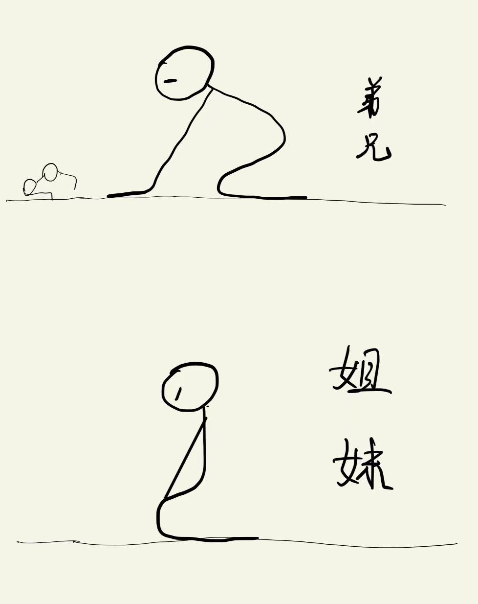

核心内容:
祷告的正确姿态
祷告的时间和频率
祷告的目的
祷告的心态
祷告的内容
祷告的困惑和建议
1.预备恳切火热的心
2.衣着端正：（不能赤脚）袜子√ 短裤× 睡衣×
3.跪姿（敬畏）：左手/左脚放在右手/右脚上：交托依靠神
(弟兄手放在地上，姊妹手放在膝盖上)
【右手代表神，左手代表自己】
4.脱下眼镜：谦卑，有学问/长辈才带眼镜

但6:10 但以理在受逼迫的环境中依然一天三次向神祷告
建议中午11点时祷告一次，因为这是香烧得最旺的时候。
晚上洗漱之前，穿戴整齐的时候进行祷告。感谢神一天的带领，回顾一天有没有要归正的地方。
约定的牧者告诉我们，最有效的方式是出声的祷告，而不是默祷。
帖前5:16-18 常常喜乐，不住地祷告，凡事谢恩
要真正地相信这话语，一天至少要向神献上三次祈祷，但我要说应该常常祷告,“无论做什么都要想着神的事，并且将全国的新天新地的圣徒们交托在神的面前”，这就是祈祷。
不要忘记我是从罪中得洁净的人，自己是不足的，并感谢神的拣选。
告白：直到如今所走的路，都是神的带领
所以要祷告祈求神赐予所有灵上的能力，也把所有的荣耀归给神。
这里“那等候耶和华的”是指新天新地12支派的圣徒们
1. 无论做什么事情，都要时常祷告。不要独自包揽，忧心忡忡。为了正当又合理(适当)的事情，哪怕是小事也要尽心地献上真心的祷告。不要说没有神也没有天使，只靠着自己的能力去做，要经常祷告，让自己认识到靠着神的帮助就能做到。事情是由神来做的。
2、若祷告求神负责引导以后的脚步，这样神就会带领我们的脚步。
1、要思想启4章灵界神的宝座形象，以及为我们代赎罪的十字架上耶稣的形象祷告。 2、以谦卑降低、求神怜悯帮助的心来祷告 路18:10-14（法利赛人和税吏的祷告），路17:7-10
（太6:33 12枝派质和量的完成，灵界天国的降临）
神的国和神的义：祷告求每个支派受印的12000人能保质保量的选出，也能成就在我的身上。
谦卑祷告神的火热之心、天国永生所望、清晰明白领悟神话语的智慧、体会神的心、属灵的善恶区分、遇到事情站在神的角度思考的智慧、对于神的敬畏、依靠之心、顺从话语和SMZ的心、饥渴慕义、感恩的心、处理信仰 工作 家庭的平衡的智慧、面对环境的刚强得胜的精神和灵。
形式上的祷告、消极否定的情绪、自我审判、自以为是的骄傲的心、依靠自己能力做信仰的血气、嫉妒恼怒、不饶恕、烦躁、不耐烦、贪恋世界物质的心、属世界的忧愁忧虑、争竞的心、困倦的灵、隐而未现的罪、麻木的心、不火热的心、不平不满、抱怨、传舌、论断人、污秽的意念、不信或者小信的恶心。
祷告不可灰心
路18:1-8 不义的官为寡妇伸冤
① 不祷告的人，不是信仰人。不祈求神的帮助，也无法做成神的工（无法除掉 罪，抓住魔鬼，无法成就天国永生。)
② 神虽然知道，但神不一定赐予。
父亲也要看子女的态度才决定给或者不给。
祷告后耐心等待，神最清楚我们需要的是什么，根据事情的结果，思考神想 给我的是什么。
祷告几次就不想祷告了，是骄傲和安逸的想法。
并不是向神祷告了就无条件的上达,通过天使上升时上达到神那里。并且也不随意给予应验的。首先要到时候,要成为可承受的器皿,而且给予应验时衡量是不是把所赐的能够照着神的旨意好好使用的人。因为神具有所有的,所以可以给,也可以不给。这是神的心。
①话语领悟了（话语、时代、牧者、天国永生的所望），才能火热祷告。与神、耶稣、牧者的心意相通才能恳切。
②生活中意识到情况紧急，自己非常缺乏，非常需要时才会恳切。
不知道如何向神祈求帮助；周边环境嘈杂，会影响自己；每次祷告都会有各种画面出现，特别是疲惫困倦的时候。
解决方法：
提前列好祷告事项
想着启4章灵界宝座图和十守架上的耶稣
出声祷告
训练专心不受环境影响的祷告
创24章 AB老仆人为以撒寻妻，明白神旨意的精确烧香
创28:18-22 雅各的许愿烧香，S若怎样带领必怎样回报
雅各蒙S允准后去埃及
摩西诉苦烧香
出14:15 摩西绝境中的哀求
出33:15 若不同去，就不要领上去（老师寻访：若S不同去就不去）
诗90篇 神人摩西的祈祷
诗27-28 大卫的赞美烧香
诗32，诗34:18，诗51 大卫的悔改烧香
太14:23 耶稣经常独自上山烧香
徒10章 哥尼流的烧香
太6:5-9 形式
帖前5:16-17 不住地烧香
腓4:6-7 凡事烧香，一无挂虑地烧香
路22:39-46，来5:7 客西玛尼亚园的烧香
路12:12-15 耶稣烧香后拣选12门徒
提前2:8 随处
提前4:5 神的道＋烧香→圣洁
通过正确的祷告，可以认识我自己。祷告让我们拥有一颗感恩和感谢的心，带着积极心态和力量去面对每件事情，不会每天怨天尤人。
神是圣洁的，在神面前祷告的姿态要端正，注意着装。
如果想祷告就祷告、不想祷告就不祷告，那么灵性会变得迟钝，无法识别和胜过试探。
祷告内容要详细，像烧一样把香捣碎。
不祷告是一种骄傲，是罪。企图靠着自己的力量解决所有问题，心地刚硬，把信仰和生活完全分离开来，这样是体验不到神的带领的。
学习话语的同时，要恳切祷告，神喜悦我们向神求智慧和领悟话语的心。
祷告时不要疑惑。要有百分之百的信心，不能心怀二意，不要自我审判。
祷告的心态要谦卑，因为凡自卑的必升为高。
祷告时闭上肉体的眼睛，打开属灵的眼睛。如何打开属灵的眼睛呢？只有领悟了话语，才能打开属灵的眼睛。
光靠这话语是不能够进天国的，话语和祷告是一个人的两条腿，要一同行做。